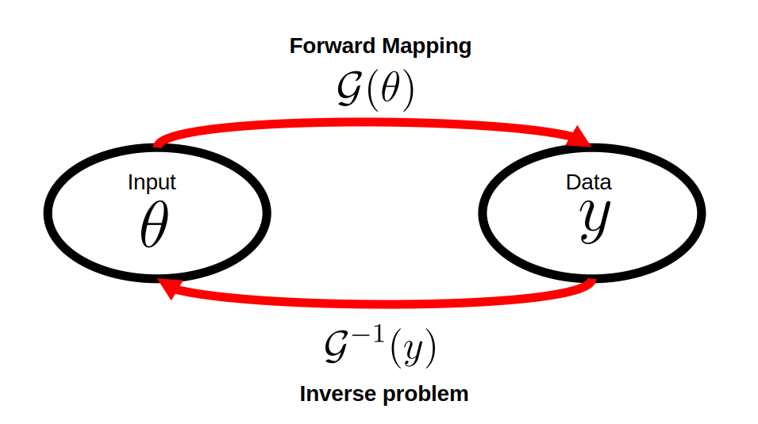
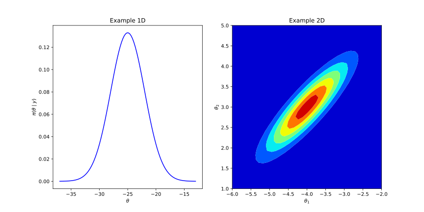
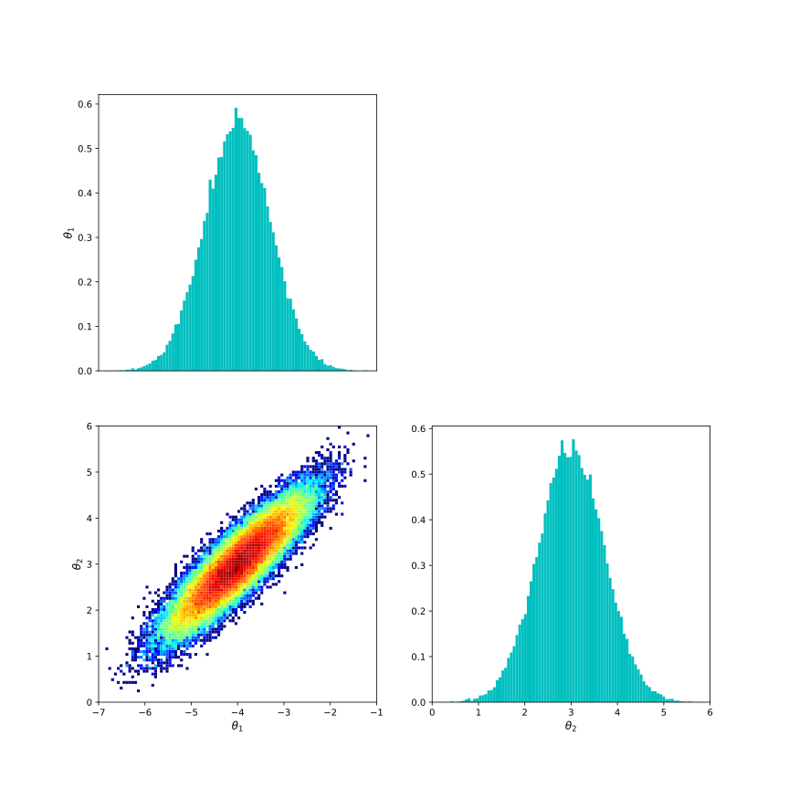

Bayesian paradigm for inverse problems
What is an inverse problem?
Mathematical models are essential tools in science and engineering. Typical examples come from physics, where different physical quantities are described by equations that depend on underlying parameters. In such settings, we can represent the system with a parameter-dependent model: \(\mathcal{G}:\Theta \subset \mathbb{R}^{m} \rightarrow \mathcal{Y} \subset \mathbb{R}^{n}\), typically expressed as: $$ y = \mathcal{G}(\theta), $$ where \( \theta \) denotes the parameters, and \( \mathcal{G} \) is the forward model (or forward mapping) that transforms parameters into observable outcomes.
When we compute \( y \) from a known \( \theta \), we solve a forward problem. Conversely, estimating \( \theta \) from observed data \( y \) is known as solving an inverse problem, or simply inversion (see e.g., [7]). The distinction between both processes is illustrated in the diagram below:

The study of inverse problems is not new, and it appears in different contexts, including statistics (see e.g., [1]). Where they are sometimes called, regression problems. Classical examples are the estimation of parameters in linear regression, or the study of medical images (see e.g., [8]). In general inverse problems are challenging, due the existence of the inverse map \(\mathcal{G}^{-1}\) cannot be garanteed (see e.g., [3]). Other main trouble is the stability of the inversion over peturbations of the data (see e.g., [5]). This last fact is relevant due in the reality, the measurement data \(y\) is contaminated with random noise \(\eta\) as follows:
$$ y = \mathcal{G}(\theta) + \eta. $$
Classical Statistical Approach
In general, the noise \(\eta\) can be modeled as a random variable with zero mean, i.e., \(\mathbb{E}[\eta] = 0\). A common assumption is that the noise follows a Gaussian distribution: $$ \eta \sim \mathcal{N}(0, \Gamma). $$ This implies that the measurement data \(y\) is also a random variable, and the estimation of the parameter \(\theta\) is affected by the inherent randomness of the system.
Classical methodologies for handling this issue often involve applying filtering techniques to reduce the influence of noise in the observed data \(y\) (see, e.g., [1]). Alternatively, a statistical approach assumes that the parameter \(\theta\) is also a random variable: $$ \eta \text{ = random variable} \implies y \text{ = random variable} \implies \theta \text{ = random variable}. $$
This framework is common in frequentist statistics, particularly when \(\mathcal{G}\) is a linear operator. In this case, multivariate linear regression yields a point estimator \(\overline{\theta}\) based solely on the model and the measurement data. This estimator is typically derived through the maximum likelihood method, which involves defining a likelihood function that measures the discrepancy between the model prediction and the observed data as a function of the parameter. For Gaussian noise, the likelihood takes the form: $$ \pi(y \mid \theta) := C_{\Gamma} \exp\left(-\frac{1}{2}\Vert y - \mathcal{G}(\theta) \Vert_{\Gamma^{-1}}^{2} \right), $$ where \(C_{\Gamma} = (2\pi \det(\Gamma))^{-1/2}\), and the norm \(\Vert z \Vert_{\Gamma^{-1}}\) is induced by the inner product \(\langle \Gamma^{-1/2}z , \Gamma^{-1/2}z\rangle\). This formulation corresponds to \( y \mid \theta \sim \mathcal{N}(\mathcal{G}(\theta), \Gamma) \).
The corresponding maximum likelihood estimator is then given by: $$ \overline{\theta} := \arg\max_{\theta} \pi(y \mid \theta). $$ This estimation relies solely on the model and observed data, and implicitly requires that the forward operator \(\mathcal{G}\) be surjective, at least over the image space of interest. As a result, the assumptions imposed on \(\mathcal{G}\) can be quite restrictive.
Why is Bayes optimal?
One way to relax strong assumptions on the forward operator (such as surjectivity in linear models) is to instead place assumptions on the unknown parameter itself. This is the central idea in the Bayesian statistical framework (see, e.g., [4]). In this paradigm, we incorporate prior knowledge about the parameter—provided by domain expertise or previous experiments—through a prior probability distribution, denoted by \(\pi_0(\theta)\).
This gives us a new approach to estimating the parameter, which is now based on:
1) The observed measurement data \(y\), and
2) The prior distribution \(\pi_0(\theta)\).
Using this information, we construct a new distribution over the parameter conditioned on the data, denoted by \(\pi(\theta \mid y)\). This is made possible through Bayes theorem: $$ \pi(\theta \mid y) = \frac{\pi(y \mid \theta)\, \pi_0(\theta)}{Z(y)}, $$
Here, \(\pi(\theta \mid y)\) is called the posterior distribution, and \(Z(y)\) is a normalization constant (also known as the evidence or marginal likelihood) that ensures the posterior integrates to one.
The posterior distribution can be analyzed in various ways. For example:
1) If the dimension of \(\theta\) is low, we can directly visualize the distribution.

2) We can estimate quantitatively some statistical estimators of the distribution as: mean value, variance, median, mode(s).
3) We can generate samples, which are useful for generate histograms or estimate via Monte Carlo the statistical estimators mentioned previously.

4) In high-dimensional problems could be enough to estimate the mode(s), which are commonly called in this context MAP (Maximum a posteriori probability value), and it is defined as follows: $$ \theta_{MAP} = \arg\max_{\theta} \pi(\theta \mid y). $$
5) Estimate the probability that the parameter is located between some specific values. Which in Bayesian context is a problem that has sense.
Bayesian statistics provide a natural framework to address the ill-posedness of inverse problems. As discussed earlier, inverse problems often require strong assumptions on the forward mapping \(\mathcal{G}\), which may not be feasible in practice. The use of a prior distribution serves as a form of regularization that stabilizes the solution.
To illustrate this property, consider the following simple example. Assume that the prior is Gaussian: \(\pi_0(\theta) \sim \mathcal{N}(0, C_0)\). Then, the posterior distribution takes the form: $$ \pi(\theta \mid y) \propto \exp\left(-\frac{1}{2} \Vert y - \mathcal{G}(\theta) \Vert_{\Gamma^{-1}}^2 \right) \exp\left(-\frac{1}{2}\Vert \theta \Vert_{C_0^{-1}}^2 \right). $$
We can then estimate the maximum a posteriori (MAP) value, which corresponds to: $$ \begin{split} \theta_{\text{MAP}} &= \arg\max_{\theta} \pi(\theta \mid y) \\ &= \arg\min_{\theta} \left( \Vert y - \mathcal{G}(\theta) \Vert_{\Gamma^{-1}}^2 + \Vert \theta \Vert_{C_0^{-1}}^2 \right) \end{split} $$
This optimization problem can be interpreted as classical Tikhonov regularization (also known as Ridge Regression). Similarly, if the prior \(\pi_0\) is chosen to be uniform, the MAP estimation corresponds to a constrained optimization problem over a compact support set. More generally, the MAP formulation can be interpreted as an optimization problem with a regularization term \(\log(\pi_0(\theta))\) over the support of \(\pi_0\).
Bibliography
[1] Aster, R. C., Borchers, B., & Thurber, C. H. (2018). Parameter estimation and inverse problems. Elsevier.
[2] Gelman, A., Carlin, J. B., Stern, H. S., & Rubin, D. B. (1995). Bayesian data analysis. Chapman and Hall/CRC.
[3] Isakov, V. (2006). Inverse problems for partial differential equations (Vol. 127). New York: Springer.
[4] Kaipio, J., & Somersalo, E. (2006). Statistical and computational inverse problems (Vol. 160). Springer Science & Business Media.
[5] Kirsch, A. (2011). An introduction to the mathematical theory of inverse problems (Vol. 120). New York: Springer.
[6] Sanz-Alonso, D., Stuart, A. M., & Taeb, A. (2018). Inverse problems and data assimilation. arXiv preprint arXiv:1810.06191.
[7] Tarantola, A. (2005). Inverse problem theory and methods for model parameter estimation. Society for industrial and applied mathematics.
[8] Vogel, C. R. (2002). Computational methods for inverse problems. Society for Industrial and Applied Mathematics.